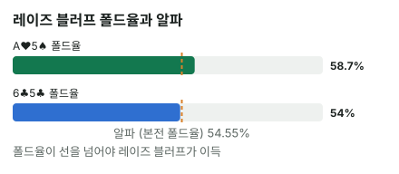

안녕하세요. E02에서는 A♥ 블로커를 들고 Hero가 먼저 벳하는 블러프를 계산했죠. 오늘은 순서가 반대예요. 상대가 먼저 리버에 벳했고, 우리는 그 위에 레이즈로 블러프할지 정해요.
레이즈 블러프는 본전 폴드율(알파) 계산에서 헷갈리기 쉬운 곳이 하나 있어요. 상대가 이미 건 돈은 어디에 넣고, 우리가 넣는 돈은 얼마로 세는지예요. 오늘은 그걸 한 판으로 정리하고, 블로커가 그 계산에 어떻게 끼어드는지 봐요.
이 글에서 배울 것
- 레이즈 블러프의 알파 = 이번에 넣는 총액 ÷ (상대 벳 포함 팟 + 이번에 넣는 총액)인 이유
- 블로커는 상대의 콜 묶음을 지울 때 레이즈 블러프를 돕고, 폴드 묶음을 지우면 오히려 해친다는 것
- 블로커 효과를 "느낌"이 아니라 콜·폴드 콤보 수와 EV로 판정하는 법
오늘의 핸드
Hero (BTN · 스택 100BB)


프리플랍
Hero 2.5BB 오픈 → 상대(BB) 콜
팟 5.5BB
플랍 · 팟 5.5BB


상대 체크 → Hero 2.75BB 벳 → 상대 콜
하트 석 장 보드예요. Hero는 A♥ 한 장으로 하트가 하나 더 오면 넛 플러시가 되는 드로우예요.
턴 · 팟 11BB


상대 체크 → Hero 4.5BB 벳 → 상대 콜
팟은 11 + 4.5 + 4.5 = 20BB가 돼요.
리버 · 팟 20BB


이번엔 상대가 먼저 10BB 벳 → Hero는 36BB로 레이즈 블러프를 할까? (상대는 레이즈에 콜 아니면 폴드만 한다고 가정)
드로우가 빗나가 Hero는 A 하이예요. 오늘 가정한 상대 벳 레인지는 모두 페어 이상이라 Hero는 콜하면 늘 져요. 그래서 비교할 선택은 폴드(0BB)와 레이즈 둘이에요.
결론부터 말할게요. 오늘 가정한 상대라면 A♥5♠의 레이즈 블러프는 폴드보다 한 번에 약 +2.74BB 이득이고, 블로커가 없는 6♣5♣로는 약 −0.36BB로 손해입니다.
1단계. 레이즈 블러프의 알파
얻는 돈과 잃는 돈부터
- 상대가 접으면 얻는 돈: 지금 팟 20BB + 상대가 건 10BB = 30BB
- 상대가 콜하면 잃는 돈: 이번에 넣는 총액 36BB
알파 = 36 ÷ (30 + 36) = 약 54.55%
11번 레이즈해 보면 보여요
이 숫자가 왜 본전인지 11번 레이즈한다고 보고 따져 봐요. 상대가 6번 접고 5번 콜하면, 접을 때 6 × 30 = 180을 얻고 콜 받을 때 5 × 36 = 180을 잃어요. 딱 본전이죠. 6 ÷ 11이 약 54.55%예요.
다른 말로 하면 폴드 6 : 콜 5보다 접는 쪽이 많아야 이득이에요. 실전에서는 "상대 폴드 묶음이 콜 묶음보다 조금 더 많은가"로 바로 떠올리면 돼요.
왜 26BB가 아니라 36BB일까
36BB 중 10BB는 상대 벳을 맞추는 몫, 26BB는 더 얹는 몫이에요. 그런데 오늘 Hero는 콜하면 늘 지는 핸드라 비교 상대가 폴드(0BB)예요. 레이즈하고 콜을 받으면 36BB가 전부 사라져요.
상대가 건 10BB는 "얻는 쪽"
상대의 10BB는 이미 팟에 들어간 돈이에요. 상대가 접으면 그 돈도 우리가 가져와요. 그래서 분모의 팟 자리에 상대 벳 포함 30BB가 들어가요.
이게 무슨 뜻이냐면, 상대가 먼저 벳한 만큼 얻을 팟이 커져서, 같은 36BB라도 팟 20BB에 우리가 먼저 거는 것보다 알파가 낮아진다는 거예요.
2단계. 상대 벳 레인지 (가정 레인지)
| 묶음 | 핸드 | 레이즈에 |
|---|---|---|
| 플러시 | A♥Q♥·A♥J♥·A♥T♥·A♥8♥, Q♥J♥·Q♥T♥·J♥T♥·T♥8♥ | 콜 |
| 셋 | 99, 44 | 콜 |
| 좋은 K | KQo | 콜 |
| 얇은 밸류 | KJo(K 페어), J9o·98o(9 페어) | 폴드 |
얇은 밸류는 자기보다 약한 핸드(블러프를 포기한 핸드, 더 작은 페어)의 콜을 노리고 작게 거는 벳이에요. 이 핸드들은 레이즈를 맞으면 접는다고 가정했어요. Hero는 하트 석 장 보드에서 플랍·턴을 벳했으니, 리버 레이즈는 플러시나 셋을 대표해요. K 페어 약한 키커나 9 페어로는 그 이야기에 맞서기 어렵다고 본 거예요.
이 레인지에서 뺀 것도 있어요. 투페어(K9·97 등), 표에 없는 작은 플러시, 상대의 블러프는 이번 가정에 넣지 않았어요. 넣는다면 투페어·작은 플러시는 콜 묶음으로, 블러프는 폴드 묶음으로 가요.
E02에서는 KJo가 Hero의 오버벳에 콜하는 "좋은 K"였는데, 오늘은 접는 쪽이에요. 먼저 벳한 쪽이 레이즈를 맞는 장면이라, 같은 K 페어라도 키커가 약하면 버티기 어렵다고 본 거예요.
3단계. 블로커를 지우고 세기
두 핸드를 나란히
| A♥5♠ | 6♣5♣ | |
|---|---|---|
| 플러시(콜) | 4 | 8 |
| 셋·KQo(콜) | 6 + 9 | 6 + 9 |
| 콜 합계 | 19콤보 | 23콤보 |
| 폴드(KJo·J9o·98o 9씩) | 27콤보 | 27콤보 |
| 폴드율 | 약 58.7% | 54% |
💡 빨리 세는 팁: KJo는 남은 K 3장 × J 4장 = 12에서, 무늬가 같은 K♠J♠·K♦J♦·K♣J♣ 3개를 빼 9예요. J9o·98o도 같은 방식으로 9씩이에요. A♥를 쥐면 A♥가 들어간 플러시 4콤보가 통째로 빠져요.
EV로 판정
레이즈 블러프는 리버 마지막 결정이라, 금액으로 바로 비교할 수 있어요. 식은 (폴드율 × 접을 때 얻는 30BB) − (콜 비율 × 콜 받을 때 잃는 36BB)예요.
A♥5♠: EV = 0.58696 × 30 − 0.41304 × 36 = 17.61 − 14.87 = 약 +2.74BB
6♣5♣: EV = 0.54 × 30 − 0.46 × 36 = 16.2 − 16.56 = 약 −0.36BB
이게 무슨 뜻이냐면, A♥5♠로 이 레이즈를 100번 하면 합계 약 +273.91BB, 6♣5♣로 하면 합계 약 −36BB라는 거예요.

무엇이 판정을 갈랐나
두 핸드의 폴드 묶음은 27콤보로 똑같아요. 다른 건 콜 묶음뿐이에요. A♥가 콜할 플러시 4콤보를 지워서 분모가 46으로 줄고, 폴드율이 54%에서 약 58.7%로 올라 알파 약 54.55%를 넘었어요.
이게 무슨 뜻이냐면, 블러프할 때 좋은 블로커는 "상대가 콜할 핸드"를 지우는 카드라는 거예요. 넛을 지운다는 이름보다, 그 카드가 어느 묶음에서 몇 콤보를 지우는지가 결론을 정해요.
왜 그럴까: 폴드율은 비율이라 분모를 줄여도 올라가요
폴드율 = 폴드 ÷ (폴드 + 콜)
폴드율은 비율이에요. 그래서 접는 핸드를 늘리지 않아도, 콜하는 핸드를 지우면 분모가 줄어 폴드율이 올라가요. 오늘 A♥가 한 일이 바로 그거예요.
어느 묶음을 지우나
비율이라서 반대 방향도 있어요. 그래서 블로커를 볼 때는 늘 "이 카드가 콜 묶음을 지우나, 폴드 묶음을 지우나"를 나눠 봐요.
폴드율이 알파 근처일 때 블로커가 판정을 바꿔요
오늘 블로커 없는 폴드율은 54%로 알파 약 54.55%에 거의 붙어 있었어요. 그래서 콜 4콤보를 지우는 것만으로 기준을 넘었죠. 폴드율이 알파와 멀리 떨어져 있었다면, 같은 4콤보로는 판정이 안 바뀌어요.
이게 무슨 뜻이냐면, 블로커의 힘은 기준선과의 거리에 달려 있다는 거예요. 아슬아슬한 장면일수록 내 카드 한 장을 꼼꼼히 세야 해요.
자주 하는 실수
실수 1. 위험을 "더 얹는 몫"만 센다 36BB 레이즈의 위험을 26BB로 보는 경우예요. 그러면 알파가 실제보다 낮게 나와서, 오늘 손해였던 6♣5♣의 레이즈 블러프도 이득처럼 보여요. 대신 콜로 못 이기는 핸드는 이번에 넣는 총액 전부를 위험으로 세요.
실수 2. 상대 벳을 팟에 안 넣는다 "팟 20BB에 36BB 레이즈"로 알파를 구하는 경우예요. 그러면 알파가 실제보다 높게 나와서, 오늘 이득이었던 A♥5♠의 레이즈 블러프를 포기하게 돼요. 대신 얻는 돈에 상대가 건 10BB까지 넣어요.
실수 3. 넛 블로커면 무조건 레이즈 블러프 A♥ 이름만 보고 레이즈하는 경우예요. 오늘도 A♥가 지운 건 4콤보뿐이고, 폴드율 약 58.7%가 알파 약 54.55%를 겨우 넘었어요. 상대가 얇은 밸류를 덜 섞거나 레이즈에 더 버티면 바로 뒤집혀요. 대신 콜·폴드 묶음을 세서 EV로 판정해요.
"레이즈 크기를 키우면 더 많이 접지 않을까요?"
좋은 질문이에요. 상대가 크기에 따라 다르게 반응한다면 그럴 수 있어요. 그때는 크기마다 상대가 무엇을 접는지 따로 세서 폴드율을 새로 구해야 해요.
오늘 계산은 상대가 레이즈 크기와 상관없이 같은 핸드로 콜한다는 가정이에요. 이 가정에서 크기를 바꾸면 알파가 어떻게 움직이는지는 연습 문제에서 직접 계산해 봐요.
숫자가 뒤집히는 지점
기준은 블로커를 지운 폴드율과 레이즈 알파의 차이예요. 폴드율 쪽은 내 카드가 콜·폴드 묶음에서 각각 몇 콤보를 지우는지로, 알파 쪽은 이번에 넣는 총액과 상대 벳 포함 팟으로 정해져요.
선생님의 한마디
리버에 상대 벳을 맞고 레이즈 블러프를 생각할 때는 이 순서예요.
- 상대가 벳하는 순간 "팟 + 상대 벳"을 먼저 더해 둬요. 레이즈 계산의 출발점이에요
- 내 레이즈가 무엇을 대표하는지(오늘은 플러시·셋) 말로 정하고, 그 이야기에 상대가 어떤 핸드로 버틸지 나눠요
- 내 두 장이 어느 묶음을 지우는지 세고, 폴드율을 알파와 비교해요
연습 문제
학습툴에는 레이즈 알파를 계산하는 칸이 없어요. 위 공식으로 알파를 직접 계산하고, 콤보는 보드와 내 카드를 지우며 세어 보세요.
문제 1. A♥5♠로 레이즈를 45BB로 키우면 어떻게 될까요? (상대는 같은 핸드로 콜)
정답 보기
알파 = 45 ÷ (30 + 45) = 60% > 폴드율 약 58.7% → 손해. EV = 0.58696 × 30 − 0.41304 × 45 = 17.61 − 18.59 = 약 −0.98BB.
폴드율은 그대로인데 넣는 돈만 늘어 알파가 폴드율을 넘어섰어요. 같은 상대라면 블로커가 만든 여유는 작은 레이즈에서만 살아 있어요.
문제 2. 같은 리버, 같은 상대, 레이즈 36BB인데 이번엔 Hero가 J♠8♠예요(J 하이, 콜하면 늘 짐). 이 두 장은 상대 레인지의 어느 묶음을 지울까요? 레이즈 블러프는 이득일까요?
정답 보기
J♠8♠는 하트가 아니라 플러시 콜 묶음은 그대로예요. 대신 폴드 묶음의 KJo·J9o·98o에서 J♠·8♠가 든 콤보를 지워요(각 9에서 7로).
- 콜: 8 + 6 + 9 = 23콤보
- 폴드: 7 + 7 + 7 = 21콤보
- 폴드율 = 21 ÷ 44 = 약 47.73% < 약 54.55% → 손해
EV = 0.47727 × 30 − 0.52273 × 36 = 14.32 − 18.82 = 약 −4.5BB. 블로커가 없는 6♣5♣(약 −0.36BB)보다도 나빠요. 접을 핸드를 지우는 카드는 블러프에 나쁜 블로커예요.
핵심 정리
- 레이즈 블러프의 알파 = 이번에 넣는 총액 ÷ (상대 벳 포함 팟 + 이번에 넣는 총액). 콜로 못 이기는 핸드는 폴드(0BB)와 비교해요
- 폴드율은 비율이라, 블로커가 콜 묶음을 지우면 올라가고 폴드 묶음을 지우면 내려가요
- 블로커가 판정을 바꾸는 건 폴드율이 알파 근처에 있을 때예요. 블로커는 결론이 아니라 폴드율을 정확히 세는 재료예요
정리하며
오늘은 K♥ 9♥ 4♥ 7♣ 2♦ 리버에서 상대 10BB 벳에 36BB 레이즈 블러프를 따져 봤어요. 알파는 상대 벳 포함 팟 30BB와 넣는 총액 36BB로 약 54.55%였고, A♥가 콜할 플러시 4콤보를 지워 폴드율을 약 58.7%로 올려 약 +2.74BB 이득이 됐죠. 블로커가 없으면 손해로, 폴드 묶음을 지우는 카드면 더 큰 손해로 바뀌었어요.
다음 글 E21에서는 블러프 계산을 잠시 내려놓고 체크 레인지를 봐요. 강한 핸드를 늘 벳으로만 보내면 체크한 쪽이 왜 약점이 되는지, 레인지를 나누는 관점에서 다뤄요.
AI 작성 · 숫자는 계산 검증 (콤보는 실제 카드로 하나씩 셈) · 가정 레인지 기준 (솔버 결과 아님) · 상대는 레이즈에 콜·폴드만 한다고 가정 · 리버 마지막 결정